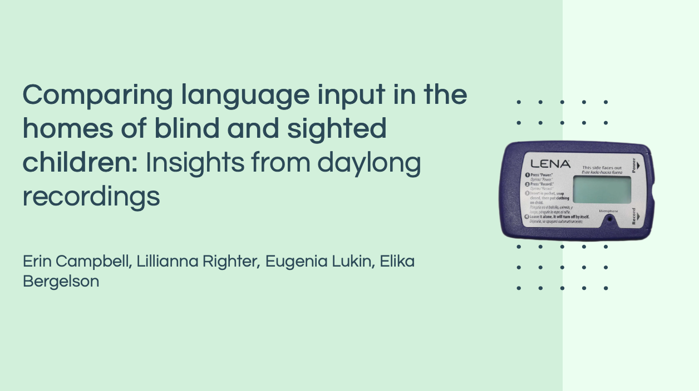

<div class="container" id="main">
 <div class="row">
  <div class="12u">
   <div class="content">
    <!-- Content -->
    <article class="box page-content">
     <header>
      <h2>
       Comparing language input
       <br/>
       <br/>
       in the homes of blind and sighted children:
       <br/>
       <br/>
       Insights from daylong recordings
      </h2>
      <h3>
       Campbell, Righter, Lukin &amp; Bergelson (2023)
      </h3>
      <h3>
       Presented at MPAL 2023 in Nijmegen, Netherlands, and BUCLD 2023, held in Boston, MA
      </h3>
     </header>
     <div class="3u 12u(mobile)">
      <section class="box feature">
       <a class="image featured" href="../../files/presentations/Campbell_2023.pdf">
        
       </a>
      </section>
     </div>
     <h4>
      Abstract
     </h4>
     <p>
      Early word learning is often described as tracking perceptually-grounded word–referent co-occurrences, i.e. seeing referents while hearing labels (Yu &amp; Smith, 2012). Given that blind language learners cannot see words’ referents but ultimately attain comparable language fluency to sighted adults (Loiotile et al., 2020; Roder et al., 2003), we asked whether their parents adapt their language input to (potentially) support this process. Might they provide more speech or interaction to supplement verbal descriptions in the absence of vision, or simplify their utterances like other caregivers of disabled children (Dirks et al., 2020; Lorang et al., 2020)?
We analyzed language environments of 15 blind children and 15 demographically- and age-matched sighted children (6–30mo.; M:16mo.) using daylong audio recordings. We derived nine language input measures across four categories: quantity, interactiveness, linguistic complexity, and conceptual features, which we compared across our blind and sighted groups (accounting for data distribution and multiple comparisons, see Table 1). Two measures were from automated LENA output, based on entire daylong recordings (~28000min. total): adult word count (quantity) and conversational turn count (interactiveness). The other seven were derived from 40min. of human annotation per daylong recording (1200min. total): manual word count (quantity), proportion of child-directed speech (interactiveness); type-token ratio and mean length of utterance (linguistic complexity); and proportion of temporally-displaced verbs (past/future/hypothetical), Child Body-Object Interaction ratings, and proportion of words that are highly visual (conceptual features).
We found three key results. First, blind and sighted children heard statistically indistinguishable input for all measures of quantity and interactiveness (all corrected p-values&gt;.05; see Table 1). Second, in contrast, input differed significantly for both linguistic complexity measures and 2/3 conceptual measures: blind children were exposed to longer utterances (t(15)=2.51, p=.039, Fig.1B), higher type-token ratios (t(15)=2.25, p=.039, Fig.1A), more temporally-displaced verbs (W=36.50, p=.022, Fig.1C), and more words rated lower on Child Body-Object Interaction (D=0.98, p&lt;.001, Fig.1D). Finally, for the 3rd conceptual measure, we found that blind and sighted children heard statistically indistinguishable quantities of highly visual words (10% of both groups’ input; t(25.11)=0.32, p=.632); notably, for blind children, these words’ referents are imperceptible.
These results suggest that overall, parents of blind and sighted children talk and interact just as much in their everyday home language environments. However, rather than simplified input, we found that language input to blind children was characterized by more complex speech and less focus on children’s here-and-now: longer utterances, more utterances about past/future/hypothetical events, more words with non-interactive referents (i.e. lower Child-Body-Object interaction ratings), similar rates of ‘highly visual’ words whose referents they cannot see). As well-established by prior work (Gleitman &amp; Gleitman, 1992; Gleitman et al 2005), young children (sighted or blind) leverage language to learn language. By providing more complex input, parents of blind children may be (deliberately or not) helping their children on their path to language fluency.
     </p>
    </article>
   </div>
  </div>
 </div>
</div>
